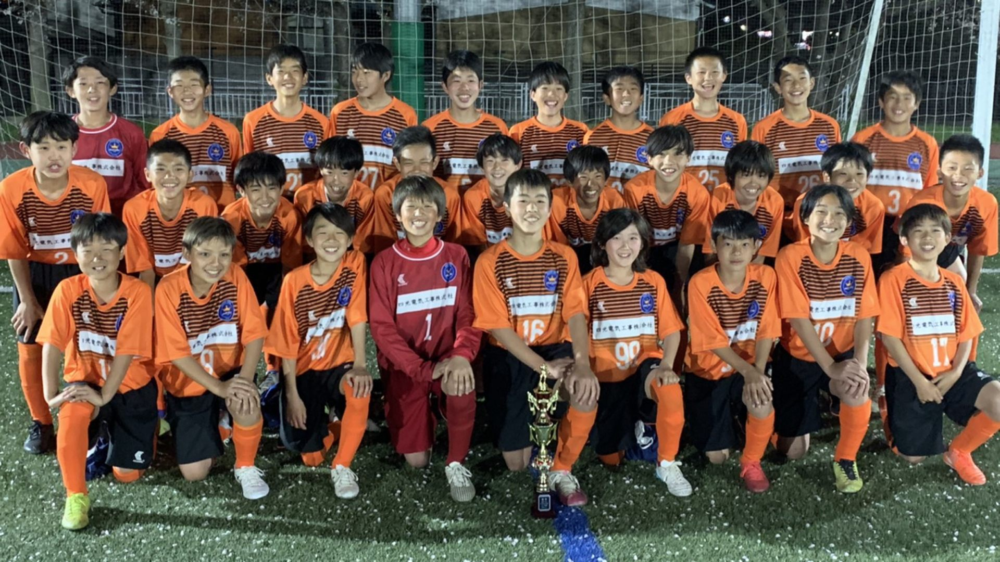
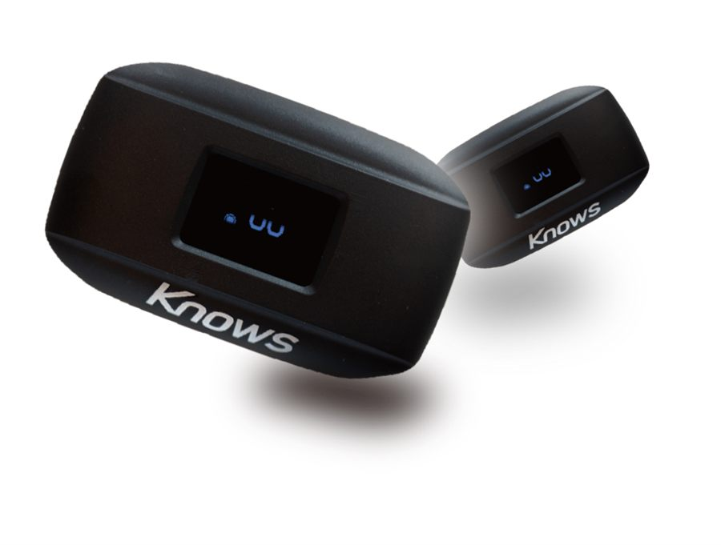
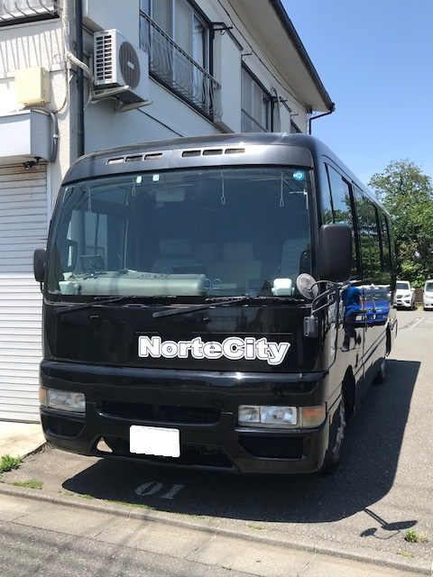
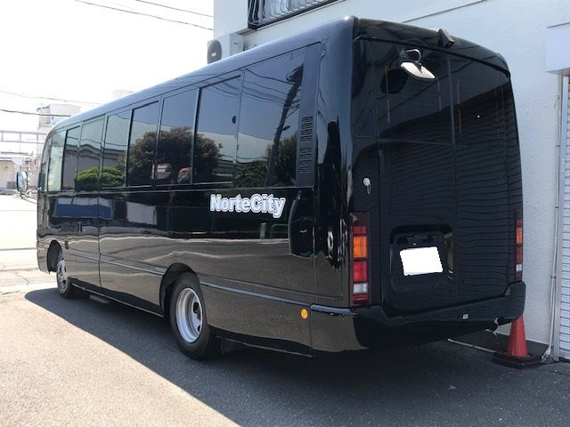

選手が確実に上手くなるから
ボールの保持時間が多くなれば攻撃回数が増え、ボールにさわる回数が増えます。チャレンジできる回数が増えるため、技術だけでなく判断能力も向上します。
TEAM
ノールチシティのジュニアユース立ち上げの理由は、これまでにないクラブの実現。それはプレイヤーズファースト（選手第一）のクラブを作ることです。
選手の成長のみを考えて指導を行い、素晴らしい環境も提供する。選手の夢を現実にするためのクラブ、それがノールチシティです。

スペインメソッドとノールチシティ独自のメソッドの融合により、日本や世界を驚かすサッカーを目指します。ポゼッションサッカーの実績があり、細部までこだわって育成を行うチームです。
圧倒的なポゼッションサッカー。ポゼッションサッカーとは、優位なポジション取りを行うことでボールを保持し続けるサッカーのこと。ロングボール主体のチームが多いなか、ノールチシティがポゼッションにこだわる理由を紹介します。
ボールの保持時間が多くなれば攻撃回数が増え、ボールにさわる回数が増えます。チャレンジできる回数が増えるため、技術だけでなく判断能力も向上します。
保持しているときは良いポジションをとって優位になること、そしてチームメイトの技術をどう活かすかを常に考えることが求められます。
グループで崩す、個人で突破する、状況に応じて判断する。ドリブル・パス・スピード・強さなど、各々の良さを活かすことができます。
パスもドリブルもロングボールも使い、速い攻撃もします。良い部分をすべて出して、相手にボールをさわらせずゴールを奪うのがノールチシティのサッカーです。

GPS搭載デバイスで運動を解析・管理。走行距離・心拍数・スプリント回数・ターン回数・乳酸値・疲労度・リカバリーを計測し、練習・試合で毎回使用します。オーバートレーニングによるケガを未然に防ぎ、効率の良いトレーニングにつなげます。
練習試合・公式戦を毎試合撮影し、自宅で見ることができます。選手自身が振り返って分析できるほか、来られなかった保護者も視聴可能。コーチから修正点が届き、個人にも改善点がフィードバックされます。


チームバスを所有（2022年6月に2号車を導入）。試合・遠征はバスで移動します。
ノールチシティで成長し、次のステージで輝けるように土台を作ります。
選手・保護者全員と面談を行い、希望のチーム・高校をヒアリングします。
希望先へチームがコンタクト。チームからも合う高校・ユースを紹介し、アドバイス・斡旋を行います。
全員と面談を行い進路を斡旋します。本人の希望校にチームがコンタクトを取り、チームからも選手に合う高校・ユースを紹介。必ず最後に決まるまでサポートします。
| 練習日 | 平日3回（18:30〜20:30）土日祝は試合 |
|---|---|
| 月謝 | 18,000円 |
| 年会費 | 18,000円連盟登録・保険料 |
| 1学年の人数 | 30名セレクション状況で前後します。練習の質向上・試合出場数確保のため |
| 所属 | 2021年4月から東京都クラブユース連盟に加盟 |
ノールチシティのコーチが指導する本格スクール。小学生のうちからジュニアユース・ユースで通用する技術・判断・戦術を身につけます。ノールチシティとは別組織のため（連盟登録なし）、他チームに所属していても通えます。曜日・時間帯で複数コースがあります。
入団・練習会・スクールに関するお問い合わせ